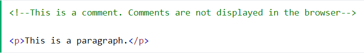
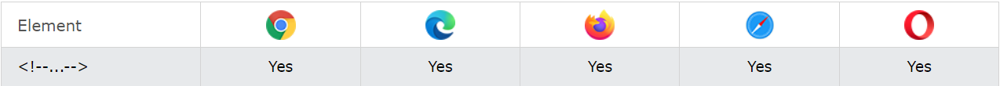

Les commentaires "!--...--!" ne sont pas affichés dans un serveur
Définition et utilisation :
La balise comment est utilisée pour insérer des commentaires dans le code source. Les commentaires ne sont pas
affichés dans les navigateurs.
Vous pouvez utiliser des commentaires pour expliquer votre code, ce qui peut vous aider lorsque vous modifierez
le code source ultérieurement.
Ceci est particulièrement utile si vous avez beaucoup de code.
Prise en charge du navigateur :
Conseils et remarques :
Vous pouvez utiliser la balise de commentaire pour "masquer" les scripts des navigateurs sans prise en charge
des scripts (afin qu'ils ne les affichent pas sous forme de texte brut) :
Remarque :
Les deux barres obliques à la fin de la ligne de commentaire (//) constituent le symbole de
commentaire JavaScript. Cela empêche JavaScript d'exécuter la balise -->.
Attributs standards :
La balise de commentaire ne prend en charge aucun attribut standard.
Plus d'informations sur les attributs standard.
Attributs d'événement :
La balise de commentaire ne prend en charge aucun attribut d'événement.
Plus d'informations sur les attributs d'événement.